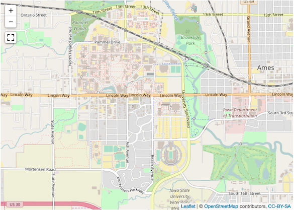

1 Leaflet Map
1.0.1 Problem
The control buttons in the upper-right corner of the map are not styled correctly. Their transparent background and the missing button image on the lower button are the result of the default gitbook css style overriding the leaflet.extras style.
library(leaflet)
library(leaflet.extras) #devtools::install_github('bhaskarvk/leaflet.extras')
leaflet() %>%
addTiles() %>%
setView(-93.65, 42.0285, zoom = 14) %>%
addFullscreenControl()1.0.2 Desired Outcome
I would like for the map controls to look like this instead:
